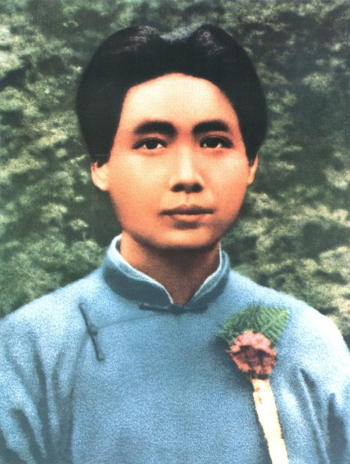
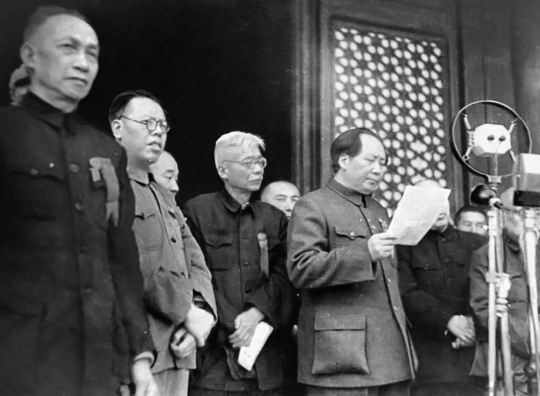
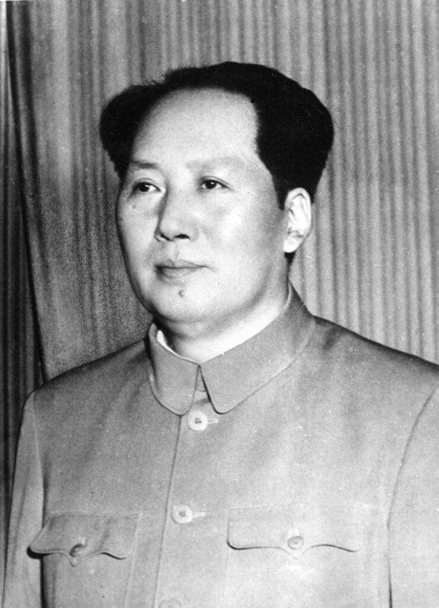
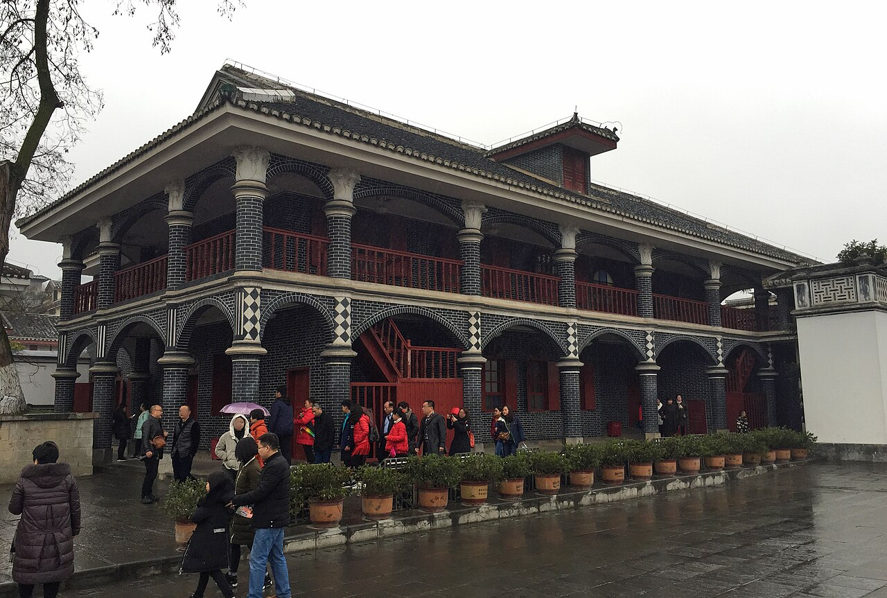
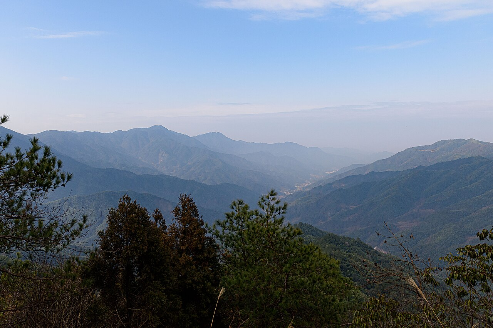
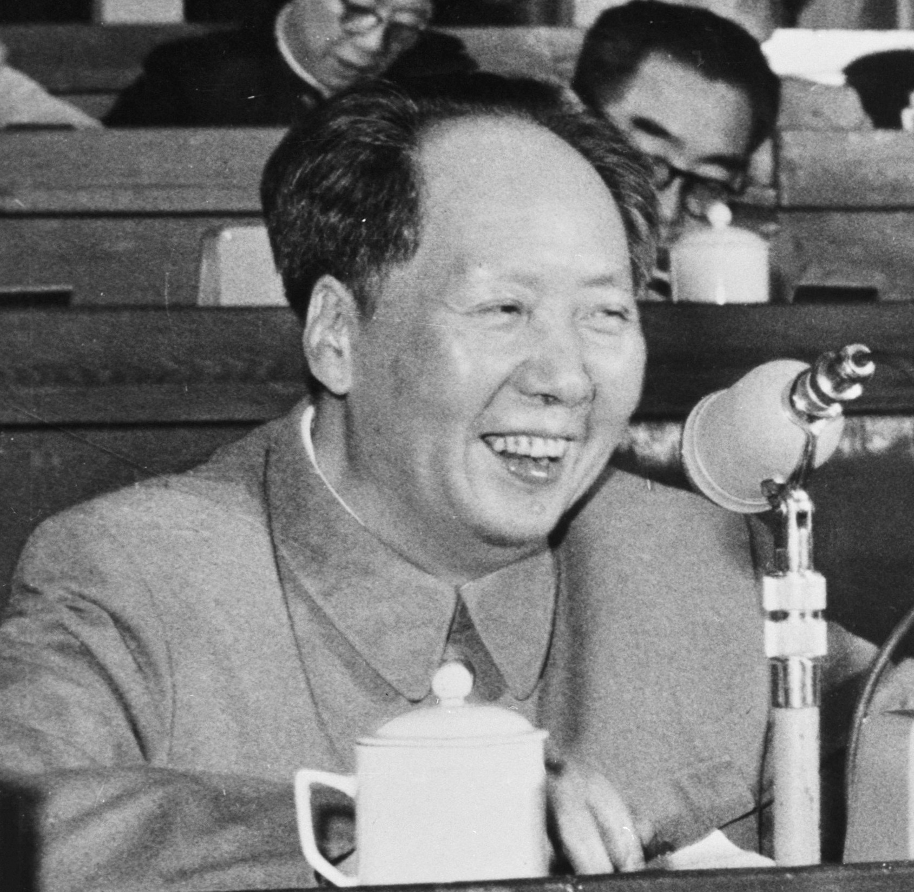

1913年春 · 人物肖像青年毛泽东：1913年肖像
1913年春的青年肖像，可结合临近求学经历阅读，摄影者不详。
署名 摄影者不详；维基共享资源收录
许可 公有领域（原收录页标注，PD-China）
查看本地大图 ↗来源与使用说明
原档案地址：
https://commons.wikimedia.org/wiki/File:Mao_Zedong_1913.jpg许可说明地址：
https://commons.wikimedia.org/wiki/File:Mao_Zedong_1913.jpg#Licensing本地文件：assets/photos/mao-1913.jpg。保留图片原有内容；页面按版式显示图片。署名与许可随图片保存，转载时请继续保留。

1919年 · 人物肖像青年毛泽东：1919年肖像
1919年的青年肖像，可与新民学会和《湘江评论》的资料一同阅读。
署名 摄影者不详；原档案来源：中国共产党新闻；维基共享资源收录
许可 公有领域（原收录页标注，Public Domain Mark）
查看本地大图 ↗来源与使用说明
原档案地址：
https://commons.wikimedia.org/wiki/File:Mao_Zedong_1919.jpg许可说明地址：
https://creativecommons.org/publicdomain/mark/1.0/本地文件：assets/photos/mao-1919.jpg。保留图片原有内容；页面按版式显示图片。署名与许可随图片保存，转载时请继续保留。

1919年11月16日 · 历史活动新民学会会员在长沙合影
新民学会部分会员在长沙周南女校合影。原图注记载毛泽东位于后排左四，摄影者不详。
署名 摄影者不详；原档案引用新华网；维基共享资源收录
许可 公有领域（原收录页标注，PD-China）
查看本地大图 ↗来源与使用说明
原档案地址：
https://commons.wikimedia.org/wiki/File:新民学会会员在长沙摄影.jpg许可说明地址：
https://commons.wikimedia.org/wiki/File:新民学会会员在长沙摄影.jpg本地文件：assets/photos/xinmin-society-1919.jpg。保留图片原有内容；页面按版式显示图片。署名与许可随图片保存，转载时请继续保留。

1924年 · 人物肖像1924年在上海的毛泽东
1924年在上海的毛泽东，属于早期革命活动时期的人物记录。
署名 摄影者不详；原档案引用新华网；维基共享资源收录
许可 公有领域（原收录页标注，PD-China）
查看本地大图 ↗来源与使用说明
原档案地址：
https://commons.wikimedia.org/wiki/File:Mao_Zedong_in_1924.jpg许可说明地址：
https://commons.wikimedia.org/wiki/File:Mao_Zedong_in_1924.jpg本地文件：assets/photos/mao-1924.jpg。保留图片原有内容；页面按版式显示图片。署名与许可随图片保存，转载时请继续保留。

1925年 · 人物肖像1925年的毛泽东
原收录页标为1925年，说明通常认为是在广州拍摄的人物照；摄影者不详。
署名 摄影者不详；维基共享资源收录
许可 公有领域（原收录页标注，PD-China）
查看本地大图 ↗来源与使用说明
原档案地址：
https://commons.wikimedia.org/wiki/File:Mao_Zedong_in_1925.jpg许可说明地址：
https://commons.wikimedia.org/wiki/File:Mao_Zedong_in_1925.jpg本地文件：assets/photos/mao-1925.jpg。保留图片原有内容；页面按版式显示图片。署名与许可随图片保存，转载时请继续保留。

1931年 · 人物肖像1931年的毛泽东
1931年人物肖像，摄影者及具体拍摄地点未见明确记载。
署名 摄影者不详
许可 公有领域（原收录页标注）
查看本地大图 ↗来源与使用说明
原档案地址：
https://commons.wikimedia.org/wiki/File:Mao1931.jpg许可说明地址：
https://commons.wikimedia.org/wiki/Commons:Public_domain本地文件：assets/photos/mao-1931.jpg。保留图片原有内容；页面按版式显示图片。署名与许可随图片保存，转载时请继续保留。

约1937年 · 历史活动毛泽东与埃文斯·卡尔逊合影
毛泽东与到访中国西北地区的卡尔逊合影；照片最迟于1938年12月发表。
署名 摄影者不详；原收录页推测可能为《中国评论周报》
许可 公有领域（原收录页标注）
查看本地大图 ↗来源与使用说明
原档案地址：
https://commons.wikimedia.org/wiki/File:Photograph_of_Mao_Zedong_with_Evans_Carlson_circa_1937_Trim.jpg许可说明地址：
https://commons.wikimedia.org/wiki/Commons:Public_domain本地文件：assets/photos/mao-carlson.jpg。保留图片原有内容；页面按版式显示图片。署名与许可随图片保存，转载时请继续保留。

1945年8月 · 历史活动毛泽东在重庆机场与欢迎者合影
毛泽东赴重庆谈判时在机场与欢迎者合影，原图注列有张澜、邵力子、郭沫若、傅学文、张治中与毛泽东。
署名 摄影者不详；原档案来源：人民网政协频道；维基共享资源收录
许可 公有领域（原收录页标注，PD-China）
查看本地大图 ↗来源与使用说明
原档案地址：
https://commons.wikimedia.org/wiki/File:Mao_Zedong_in_Chongqing.jpg许可说明地址：
https://commons.wikimedia.org/wiki/File:Mao_Zedong_in_Chongqing.jpg本地文件：assets/photos/mao-chongqing-1945.jpg。保留图片原有内容；页面按版式显示图片。署名与许可随图片保存，转载时请继续保留。

1949年10月1日 · 历史活动1949年开国大典
1949年10月1日，毛泽东在开国大典上宣告中华人民共和国中央人民政府成立。
署名 原摄影者未明确；维基共享资源由 Orihara1 上传
许可 公有领域（原收录页标注，PD-China）
查看本地大图 ↗来源与使用说明
原档案地址：
https://commons.wikimedia.org/wiki/File:Mao_Proclaiming_New_China.JPG许可说明地址：
https://commons.wikimedia.org/wiki/File:Mao_Proclaiming_New_China.JPG#Licensing本地文件：assets/photos/mao-founding-1949.jpg。保留图片原有内容；页面按版式显示图片。署名与许可随图片保存，转载时请继续保留。

1950年 · 人物肖像新中国成立初期的肖像
陈正青摄，新中国成立初期的人物肖像，非开国大典现场照片。
署名 陈正青
许可 公有领域（原收录页标注）
查看本地大图 ↗来源与使用说明
原档案地址：
https://commons.wikimedia.org/wiki/File:Mao_Tse_Tung.jpg许可说明地址：
https://commons.wikimedia.org/wiki/Commons:Public_domain本地文件：assets/photos/mao-1950.jpg。保留图片原有内容；页面按版式显示图片。署名与许可随图片保存，转载时请继续保留。

1972年2月21日 · 历史活动毛泽东会见尼克松
毛泽东在北京会见美国总统尼克松。影像来自尼克松时期白宫照片集。
署名 美国白宫摄影办公室（尼克松时期照片集）；美国国家档案馆藏
许可 公有领域（原收录页标注）
查看本地大图 ↗来源与使用说明
原档案地址：
https://commons.wikimedia.org/wiki/File:President_Richard_Nixon_and_Mao_Zedong.jpg许可说明地址：
https://commons.wikimedia.org/wiki/Commons:Public_domain本地文件：assets/photos/mao-nixon-1972.jpg。保留图片原有内容；页面按版式显示图片。署名与许可随图片保存，转载时请继续保留。

2012年10月17日 · 足迹场景韶山毛泽东故居
现代拍摄的韶山故居实景，供地点阅读；并非1893年历史照片。
署名 huangdan2060
许可 公有领域（原收录页标注）
查看本地大图 ↗来源与使用说明
原档案地址：
https://commons.wikimedia.org/wiki/File:The_former_residence_of_Mao_Zedong_5.jpg许可说明地址：
https://commons.wikimedia.org/wiki/Commons:Public_domain本地文件：assets/photos/shaoshan-residence.jpg。保留图片原有内容；页面按版式显示图片。署名与许可随图片保存，转载时请继续保留。

2018年2月20日 · 足迹场景遵义会议会址外观
现代拍摄的遵义会议会址外观，帮助了解阅读地点，非1935年会议现场照片。
署名 N509FZ
许可 CC BY-SA 4.0
查看本地大图 ↗来源与使用说明
原档案地址：
https://commons.wikimedia.org/wiki/File:Site_of_Zunyi_Conference_(20180220101816).jpg许可说明地址：
https://creativecommons.org/licenses/by-sa/4.0本地文件：assets/photos/zunyi-site.jpg。保留图片原有内容；页面按版式显示图片。署名与许可随图片保存，转载时请继续保留。

2025年1月24日 · 足迹场景黄洋界以西的井冈山山景
从黄洋界附近记录的井冈山现代山景，非1927年历史影像。
署名 N509FZ
许可 CC BY-SA 4.0
查看本地大图 ↗来源与使用说明
原档案地址：
https://commons.wikimedia.org/wiki/File:Jinggang_Mountains_west_of_Huangyangjie_(20250124101746).jpg许可说明地址：
https://creativecommons.org/licenses/by-sa/4.0本地文件：assets/photos/jinggangshan-landscape.jpg。保留图片原有内容；页面按版式显示图片。署名与许可随图片保存，转载时请继续保留。

年份待核实 · 人物肖像另一幅档案中的肖像
荷兰国家档案馆ANEFO馆藏，原页的日期标注存在差异，具体年份待核实。
署名 摄影者不详；荷兰国家档案馆 ANEFO 馆藏
许可 CC0
查看本地大图 ↗来源与使用说明
原档案地址：
https://commons.wikimedia.org/wiki/File:Mao_Zedong_Anefo.jpg许可说明地址：
http://creativecommons.org/publicdomain/zero/1.0/deed.en本地文件：assets/photos/mao-anefo.jpg。保留图片原有内容；页面按版式显示图片。署名与许可随图片保存，转载时请继续保留。